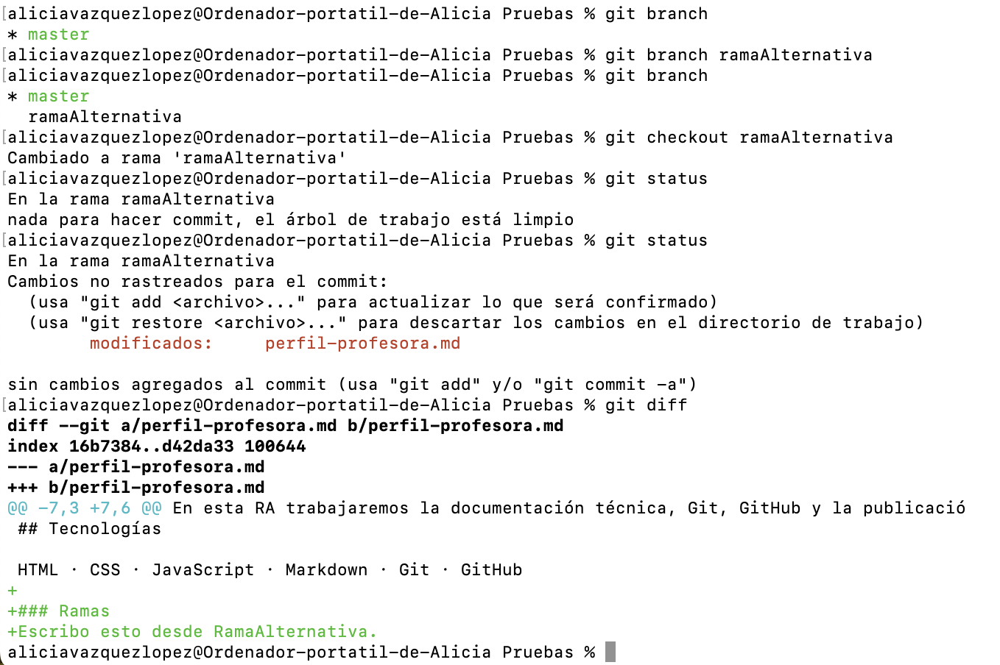
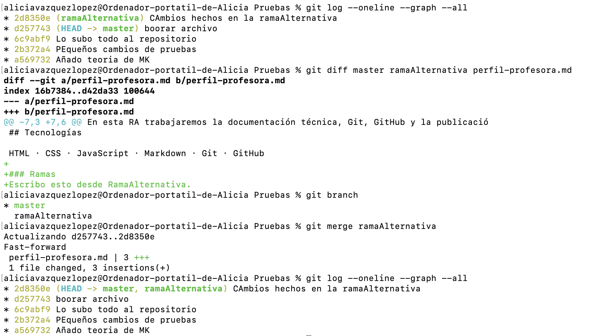

Rama principal
Suele llamarse master; en repositorios antiguos puede llamarse master.
Contiene la versión que queremos mantener estable.
3 · Git local · Ramas y merge
Una rama es una línea de trabajo independiente. Permite probar una mejora o resolver un error sin modificar la rama principal hasta que el cambio está preparado.
Imagina que master es la versión estable de tu proyecto. Al crear una rama, Git parte del
mismo commit y abre otro camino de trabajo. Los commits nuevos de esa rama no aparecen en
master hasta que decidimos fusionarlos.
Suele llamarse master; en repositorios antiguos puede llamarse master.
Contiene la versión que queremos mantener estable.
Por ejemplo, rama-feature. Aquí desarrollamos una mejora de forma aislada y
hacemos sus commits.
Es la operación que incorpora los commits de una rama de trabajo en otra rama, normalmente desde
una feature hacia master.
Idea clave
Una rama no es una copia completa de la carpeta: es una referencia a un punto de la historia. Git comparte los commits comunes y registra solo los cambios nuevos.
Comprueba siempre dónde estás y que no dejas trabajo a medias. Cambiar de rama modifica los archivos visibles de tu carpeta para mostrar la versión correspondiente a la rama elegida.
git status debería indicar que no hay nada pendiente de confirmar. Si hay cambios,
confírmalos o guárdalos antes de continuar.
git statusEl asterisco de git branch marca la rama en la que estás. También puedes consultar
solo su nombre.
git branchPara una nueva funcionalidad usamos nombres cortos, en minúsculas y separados con guiones. El prefijo
feature/ deja clara la finalidad. También se usan bugfix/ para correcciones y
chore/ para mantenimiento.
Crea la rama a partir de la rama actual, pero te mantiene donde estabas.
git branch rama-nuevaEs la opción habitual: crea la rama y te sitúa en ella en un solo paso.
git switch -c rama-nuevaCuando la rama ya existe, úsala para moverte entre ella y la principal.
git switch mastergit switch rama-nuevaAntes se usaba git checkout para salir de la rama actual e ir a la indicada.
git checkout -git checkout rama-nuevaDespués de cambiar, verifica la rama activa y revisa los archivos de la carpeta.
git branchgit status
El historial gráfico muestra dónde se separaron las ramas y dónde se han unido. Ejecuta este comando antes y después del merge para comprobar qué ha ocurrido.
git log --oneline --graph --allTambién es interesante observar el los cambios realizados entre ramas y en cada fichero o uno en concreto.
git log rama1 rama2 archivoEl flujo esencial
La rama de trabajo tendrá uno o más commits que master todavía no tiene.
Los commits de la rama de trabajo pasan a formar parte de la historia de master.
Esta regla evita el error más habitual: si quieres incorporar rama-feature a
master, primero debes situarte en master. Después ejecutas el merge indicando la
rama que quieres incorporar.
git switch mastergit merge rama-featureLee el comando como una frase
“Estoy en master y traigo aquí los cambios de rama-feature”. Nunca al
revés.

Práctica guiada
Haz la práctica sobre el repositorio local de perfil.md. No necesitas GitHub todavía.
git statusgit branchgit switch -c feature/mejora-perfilperfil.md y añade una sección breve titulada Objetivo
profesional. Guarda el archivo.git statusgit add perfil.mdgit commit -m "docs: añade objetivo profesional al perfil"
git log --oneline --graph --allperfil.md:git switch master
git merge feature/mejora-perfilperfil.md, revisa el historial y elimina la
rama ya
fusionada:git log --oneline --graph --allgit branch -d feature/mejora-perfil
En esta práctica es normal que Git indique fast-forward. Significa que master no
recibió cambios propios desde que creaste la rama, así que Git puede avanzar su referencia hasta el
último commit de rama-feature sin crear un commit adicional. Los cambios se han
fusionado correctamente.
Usa -d. Git te protege si la rama contiene commits que aún no se han integrado.
git branch -d rama-feature-D puede hacer perder trabajo que no está fusionado. No lo uses en esta práctica.
git branch -D nombre-ramaLos conflictos de merge los trabajaremos en el punto 4, junto con la colaboración y las Pull Requests.